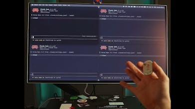

把语音的起止交给手指
Flic Cue把语音入口放进小按钮：按住说话，松开结束，再由手机应用把内容送往笔记、提醒、列表或已连接代理。它的使用假设是，拿手机只为记一个念头，也可能被其他内容打断；按钮提供一个更明确的开始和结束。官方称麦克风仅在按住时开启，应用免费且无订阅，纽扣电池可更换。这里没有新的神奇传感器：交互依靠两枚按钮、麦克风和加速度计。语音能否正确进入目标应用仍取决于配置与外部服务，不能把低摩擦录入直接写成任务完成。
Flic Cue · 消费硬件／众筹／实验性交互

Flic Cue把语音入口放进小按钮：按住说话，松开结束，再由手机应用把内容送往笔记、提醒、列表或已连接代理。它的使用假设是，拿手机只为记一个念头，也可能被其他内容打断；按钮提供一个更明确的开始和结束。官方称麦克风仅在按住时开启，应用免费且无订阅，纽扣电池可更换。这里没有新的神奇传感器：交互依靠两枚按钮、麦克风和加速度计。语音能否正确进入目标应用仍取决于配置与外部服务，不能把低摩擦录入直接写成任务完成。
官方桌面演示把大按钮用作听写：说话时显示转写，松开后插入当前应用；摇动撤销上次插入，向右划动则把文本送到剪贴板。小按钮加转动可以切换应用或终端会话，方向手势也可映射到代理与webhook。这个设计减少反复说出目标名称，却把一部分负担转成记忆映射和感知当前焦点。厂商明确说这些桌面功能仍是实验。对正在处理多窗口任务的人，重要的反馈不是按钮是否亮了，而是当前指令到底送进哪个会话，以及在错误窗口说完后怎样修正。
Product Hunt可见讨论里，有人问为什么不用AirPods，也有人关心摇动究竟撤销文本还是已经交给代理的指令。厂商回答说应用保留听到、理解和执行内容的记录，并承认需要更清楚地区分这些情况。这是具体用户疑问与厂商回应，不是独立测试，也不足以代表普遍需求。我们的判断是，物理反馈应区分已接收、等待批准、失败和外部已执行；日志还应让人找到对应动作。否则同一个摇动可能让用户以为远端工作已经撤销，而实际只删了本地输入。
官方记录给出11月5日15:00 CET众筹开场，因此11月9日出现在PH不算重新发布。11月6日公告预计当月试产、2027年1月量产、2月向支持者发货；这些都是未来计划，不是到货证明。单件众筹价标69美元符号、零售价89，页面没有在我们读取的文本里明确币种，故不擅自写USD；外部代理费用也不能由应用免费推断为零。尚未拿到设备的人更应先确认地区、兼容平台、交付与退订条款，再评估是否值得用独立硬件替代现有手机或耳机入口。